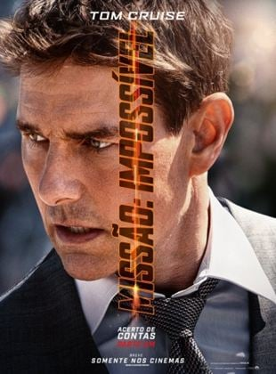
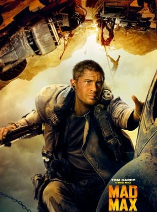

|  |
Missão Impossível 7: Acerto de Contas Parte 1Direção: Christopher McQuarrie | Roteiro: Christopher McQuarrie, Erik Jendresen | Elenco: Tom Cruise, Hayley Atwell, Ving Rhames | Ano de lançamento: 2023 Não recomendado para menos de 14 anos SinopseMissão Impossível 7: Acerto de Contas Parte 1 é o sétimo capítulo da franquia de ação e espionagem iniciada em 1996, que acompanha o agente norte-americano Ethan Hunt (Tom Cruise) em missões altamente secretas e perigosas. Agora, no novo filme, Ethan e a equipe do IMF formada por Ilsa Faust (Rebecca Ferguson), Benji Dunn (Simon Pegg) e Luther Stickell (Ving Rhames) recebem outra importante missão: eles devem rastrear uma nova e aterrorizante arma que, se cair nas mãos erradas, pode representar uma ameaça para toda a humanidade. Com o controle do futuro e o destino de todo o mundo em jogo, a equipe precisa partir em uma corrida frenética e mortal ao redor do planeta. Além disso, Ethan ainda é confrontado por um novo inimigo misterioso e muito perigoso, e é forçado a aceitar que, para completar o desafio, nada pode importar mais do que a missão - nem mesmo sua própria vida. |
Ação
Top Gun: MaverickDireção: Joseph Kosinski | Roteiro: Christopher McQuarrie, Ehren Kruger | Elenco: Tom Cruise, Miles Teller, Jennifer Connelly | Ano de lançamento: 2022. Não recomendado para menos de 12 anos SinopseNa sequência de Top Gun: Ases Indomáveis, acompanhamos a história de Pete “Maverick” Mitchell (Tom Cruise), um piloto à moda antiga da Marinha que coleciona muitas condecorações, medalhas de combate e grande reconhecimento pela quantidade de aviões inimigos abatidos nos últimos 30 anos. Entretanto, nada disso foi suficiente para sua carreira decolar, visto que ele deixou de ser um capitão e tornou-se um instrutor. A explicação para esse declínio é simples: Ele continua sendo o mesmo piloto rebelde de sempre, que não hesita em romper os limites e desafiar a morte. Nesta nova aventura, Maverick precisa provar que o fator humano ainda é fundamental no mundo contemporâneo das guerras tecnológicas. Após 34 anos do clássico, acompanhem o filme do premiado produtor Jerry Bruckheimer e de Joseph Kosinski, mesmo diretor de Tron: O Legado (2010) e Oblivion (2013). |
Assista o Triller
|  |
Mad Max: Estrada da FúriaDireção: George Miller | Roteiro: George Miller, Nick Lathouris | Elenco: Tom Hardy, Charlize Theron, Zoë Kravitz | Ano de lançamento: 2015. Não recomendado para menos de 16 anos SinopseApós ser capturado por Immortan Joe, um guerreiro das estradas chamado Max (Tom Hardy) se vê no meio de uma guerra mortal, iniciada pela Imperatriz Furiosa (Charlize Theron) na tentativa se salvar um grupo de garotas. Também tentanto fugir, Max aceita ajudar Furiosa em sua luta contra Joe e se vê dividido entre mais uma vez seguir sozinho seu caminho ou ficar com o grupo. |
Assista o Triller
O Exterminador do Futuro 2 - O Julgamento FinalDireção: James Cameron | Roteiro: James Cameron, William Wisher Jr. | Elenco: Arnold Schwarzenegger, Linda Hamilton, Edward Furlong | Ano de lançamento: 1991 Não recomendado para menos de 12 anos SinopseA criança destinada a ser líder (Edward Furlong) já nasceu, mas vive infeliz por morar com pais adotivos, e por estar ser privada da companhia da mãe (Linda Hamilton), que foi considerada louca quando falou de um exterminador vindo do futuro. Neste contexto, um androide (Arnold Schwarzenegger) exatamente como o modelo T-800 do filme original, vem do futuro, mas dessa vez, para proteger o garoto. Todavia, existe um problema: o mais avançado androide existente no futuro, um modelo T-1000 (Robert Patrick), que feito de "metal líquido", não pode ter nenhum dano permanente e pode assumir a forma que desejar, também veio para o passado, com a missão de matar o menino. |